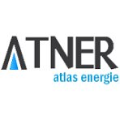
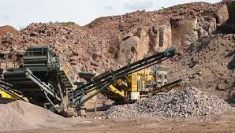
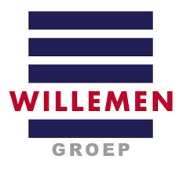

Parcours
Expériences Professionnelles

VINCI CONSTRUCTION — Sogea Maroc
03/2025 – Présent
Responsable Travaux Topographiques · Safi
Construction des Halls de Stockage de Soufre Solide – Complexe Industriel OCP Maroc Phosphore I (SP2M)
- Gestion et coordination des équipes topographiques sur chantier industriel grand envergure.
- Planification et exécution des levés, implantations et contrôles de précision.
- Traitement et production de plans sur AutoCAD, Covadis et Civil 3D (MNT, profils, cubatures).
- Suivi d'avancement et reporting technique à la maîtrise d'œuvre.
- Maintenance et gestion du matériel topographique (Station Totale, GPS RTK, Niveau).

ATNER — Atlas Énergie
11/2023 – 03/2025
Technicien Géomètre Topographe Projeteur · Azemmour
Réalisation et exploitation de la Station d'Épuration d'Azemmour – Client : RADEEJ / SRMCS
- Relevés topographiques, implantations et suivi des travaux VRD, assainissement et hydrauliques.
- Suivi des ouvrages de bâtiment et structures hydrauliques.
- Calcul de métrés et cubatures ; préparation et mise à jour des plans d'exécution.
- Contrôle qualité et observations terrain.

La Générale des Mines et Carrières
10/2022 – 11/2023
Technicien Géomètre Topographe · Beni Mellal / Rabat
Travaux VRD Lotissement Menzah Al Atlas – Assainissement Palais Royal de Rabat (Quartier Ryad)
- Relevés et implantations sur projets VRD, routiers et assainissement.
- Préparation des plans d'exécution et calcul de cubatures.
- Suivi d'avancement et contrôle qualité des travaux.

WILLEMEN GROEP
02/2022 – 10/2022
Technicien Géomètre Topographe · Tanger Med Port
Construction des Travaux Maritimes – MED PORT Tanger El Ksar Sghir – APM Terminals
- Relevés topographiques et implantations en environnement portuaire et maritime.
- Suivi des travaux VRD et ouvrages hydrauliques ; calcul cubatures ; métrés.
- Suivi des sous-traitants et coordination terrain.
KG
KYMG TRAVAUX
09/2019 – 02/2022
Technicien Géomètre Topographe & Chef d'Équipe · Beni Mellal
Projets routiers et VRD – Région Béni Mellal-Khénifra – Clients : JESA, AREP, ONEE, RADEET
- Direction, coordination et planification des équipes topographiques.
- Suivi des travaux de terrassement, VRD, ouvrages hydrauliques et ouvrages d'art.
- Calcul cubatures, métrés, préparation des plans et réceptions topographiques.
AR
ARMACON INGÉNIERIE
10/2017 – 09/2019
Technicien Géomètre Topographe · Beni Mellal
Étude et suivi des pistes, travaux routiers, assainissement et VRD – Région Béni Mellal
- Relevés topographiques, implantations et suivi des travaux routiers et VRD.
- Étude des pistes ; suivi des ouvrages hydrauliques ; réceptions topographiques.